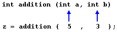
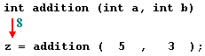
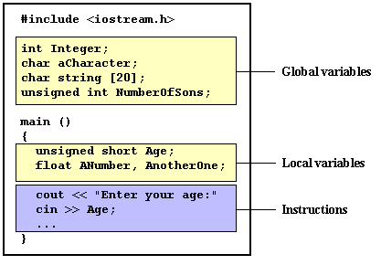

|
Section 2.2 Functions (I). | |
|
| |
|
Section 2.2 Functions (I). | |
|
| |
Using functions we can structure our programs in a more modular way, accessing to all the potential that structured programming in C++ can offer to us.
A function is a block of instructions that is executed when it is called from some other
point of the program. The following is its format:
type name ( argument1, argument2, ...) statementwhere:
Here you have the first function example:
// function example
#include <iostream.h>
int addition (int a, int b)
{
int r;
r=a+b;
return (r);
}
int main ()
{
int z;
z = addition (5,3);
cout << "The result is " << z;
return 0;
}
| The result is 8 |
In order to examine this code, first of all remember something said at the beginning of this tutorial: a C++ program always begins its execution by the main function. So we will begin by there.
We can see how the main function begins by declaring the variable z of type int. Right after that we see a call to addition function. If we pay attention we will be able to see the similarity between the structure of the call to the function and the declaration of the function itself some code lines above:
The parameters have a clear correspondence. Within the main function we called to addition passing two values: 5 and 3 that correspond to the int a and int b parameters declared for the function addition.
At the moment at which the function is called from main, the control is lost by main function and passed to function addition. The value of both parameters passed in the call (5 and 3) are copied to the local variables int a and int b within the function.
Function addition declares a new variable (int r;), and by means of the expression r=a+b;, it assigns to r the result of a plus b. Because the passed parameters for a and b are 5 and 3 respectively the result is 8.
The following line of code:
return (r);finalizes function addition, and returns the control back to the function that has called it (main) following the program by the same point in which it was interrupted by the call to addition. But additionally, return was called with the content of variable r (return (r);), that at that moment was 8, so this value is said to be returned by the function.
The value returned by a function is the value given to the function when it is evaluated. Therefore, z will store the value returned by addition (5, 3), that is 8. To explain it somehow you can imagine that the call to a function (addition (5,3)) is literally replaced by the value it returns (8).
The following line of code in main is:
cout << "The result is " << z;that, as you may already suppose, produces the printing of the result on the screen.
|

Scope of variables [re]
You must consider that the scope of variables declared within a function or any other block of instructions is only the own function or the own block of instructions and cannot be used outside of them. For example, in the previous example it had been impossible to use the variables a, b or r directly in function main since they were local variables to the function addition. Also, it had been impossible to use the variable z directly within the function addition, since this was a local variable to the function main. Therefore, the scope of local variables is limited to the same nesting level in which they are declared. Nevertheless you can also declare global variables that are visible from any point of the code, inside and outside any function. In order to declare global variables you must do it outside any function or block of instructions, that means, directly in the body of the program. |
And here is another example about functions:
// function example
#include <iostream.h>
int subtraction (int a, int b)
{
int r;
r=a-b;
return (r);
}
int main ()
{
int x=5, y=3, z;
z = subtraction (7,2);
cout << "The first result is " << z << '\n';
cout << "The second result is " << subtraction (7,2) << '\n';
cout << "The third result is " << subtraction (x,y) << '\n';
z= 4 + subtraction (x,y);
cout << "The fourth result is " << z << '\n';
return 0;
}
|
The first result is 5 The second result is 5 The third result is 2 The fourth result is 6 |
In this case we have created the function subtraction. The only thing that this function does is to subtract both passed parameters and to return the result.
Nevertheless, if we examine the function main we will see that we have made several calls to function subtraction. We have used some different calling methods so that you see other ways or moments when a function can be called.
In order to understand well these examples you must consider once again that a call to a
function could perfectly be replaced by its return value. For example the first case
(that you should already know beacause it is the same pattern that we have used in
previous examples):
z = subtraction (7,2);If we replace the function call by its result (that is 5), we would have:
cout << "The first result is " << z;
z = 5;
cout << "The first result is " << z;
As well as
cout << "The second result is " << subtraction (7,2);has the same result that the previous call, but in this case we made the call to subtraction directly as a parameter for cout. Simply imagine that we had written:
cout << "The second result is " << 5;since 5 is the result of subtraction (7,2).
In the case of
cout << "The third result is " << subtraction (x,y);The only new thing that we introduce is that the parameters of subtraction are variables instead of constants. That is perfectly valid. In this case the values passed to the function subtraction are the values of x and y, that are 5 and 3 respectively, giving 2 as result.
The fourth case is more of the same. Simply to comment that instead of:
z = 4 + subtraction (x,y);we could perfectly have put:
z = subtraction (x,y) + 4;with exactly the same result. Notice that the semicolon sign (;) goes at the end of the whole expression. It does not necessarily have to go right after the function call. The explanation might be once again that you imagine that a function can be replaced by its result:
z = 4 + 2;
z = 2 + 4;
type name ( argument1, argument2 ...) statementyou will see that it is obligatory that this declaration begins with a type, that is the type of the data that will be returned by the function with the return instruction. But what if we want to return no value?
Imagine that we want to make a function just to show a message on the screen. We do not need that it returns any value, moreover, we either need to receive no parameters. For that was devised the void type in C language. Take a look at:
// void function example
#include <iostream.h>
void dummyfunction (void)
{
cout << "I'm a function!";
}
int main ()
{
dummyfunction ();
return 0;
}
| I'm a function! |
Although in C++ it is not necessary to specify void its use is considered suitable to stand out that it is a function without parameters or arguments and not something else.
What you must always be aware of is that the format for calling a function includes to
specify its name and to enclose between parenthesis the arguments. The non-existence
of arguments do not exempts us from the obligation to put parenthesis, for that reason
the call to dummyfunction is
dummyfunction ();This stands out that it is a call to a function and not the name of a variable nor anything else.
| © The C++ Resources Network, 2000-2001 - All rights reserved |
|
Previous: 2-1. Control structures. |
index |
Next: 2-3. Functions (II). |